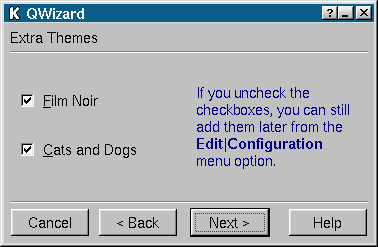

QWizard类参考
QWizard类提供了一个向导对话框的框架。
详情请见……
#include <qwizard.h>
继承了QDialog。
所有成员函数的列表。
公有成员
QWizard ( QWidget * parent = 0, const char * name = 0, bool modal = FALSE, WFlags f = 0 )
virtual void
addPage ( QWidget * page, const QString & title )
virtual void
insertPage ( QWidget * page, const QString & title, int index )
QString
title ( QWidget * page ) const
void
setTitle ( QWidget * page, const QString & title )
virtual void
showPage ( QWidget * page )
QWidget *
page ( int index ) const
int
indexOf ( QWidget * page ) const
公有槽
信号
属性
保护成员
virtual void
layOutTitleRow ( QHBoxLayout * layout, const QString & title )
保护槽
详细描述
QWizard类提供了一个向导对话框的框架。
向导就是包含一组顺序的对话框页面的特定类型的输入对话框。向导的目的是让用户一步一步地完成一个过程。向导对于复杂或者偶尔发生的并且人们发现它很难学会或者执行的任务很有用处。
QWizard会根据当前页在顺序中的位置提供页面标题和显示Next、Back、Finish、Cancel和Help推动按钮。
创建并且组装继承于QWidget的对话框页面并且使用addPage()把它们添加到这个向导中。使用insertPage()可以把一个对话框页添加到页顺序的特定位置中。使用removePage()可以移除页顺序中的一页。
使用currentPage()来得到当前显示页的指针。page()返回在页顺序中特定位置的页的指针。
使用pageCount()可以得到页顺序中的页的总量。indexOf()将会返回一个页在页顺序中的索引。
QWizard根据（或者没有）setAppropriate()的当前上下文来提供标记页面的功能。这个思想就是根据用户在前面的页面输入的内容，一个页面也许是无关的并且应该被忽略。
使用比较多的有较少选项的简单页面比使用比较少的复杂页面更是一个好的设计所要考虑的。
这里是可用的实例代码：wizard/wizard.cpp、wizard/wizard.h。
 一个QWizard页
也可以参考抽象窗口部件类、对话框类和组织者。
成员函数文档
QWizard::QWizard ( QWidget * parent = 0, const char * name = 0, bool modal = FALSE, WFlags f = 0 )
构造一个空的向导对话框。parent、name、modal和f参数被传递给QDialog构造函数。
QWizard::~QWizard ()
销毁这个对象并且释放任何已经分配的资源，包括所有的页和控制器。
void QWizard::addPage ( QWidget * page, const QString & title ) [虚]
把page添加到页顺序的末尾，标题为title。
bool QWizard::appropriate ( QWidget * page ) const [虚]
当Next按钮被点击时被调用的，如果page和当前上下文中显示的是相关的，这个虚函数返回真，否则它就会被QWizard忽略并返回假。默认实现是返回使用setAppropriate()设置的值。最终默认值为真。
警告： 如果没有页面和当前上下文相关，向导中的最后一页会被显示。
void QWizard::back () [虚 保护 槽]
当用户点击Back按钮时被调用，这个函数显示在顺序中前面的相关页面。
也可以参考appropriate()。
QPushButton * QWizard::backButton () const
返回对话框Back按钮的指针。
默认情况下，这个按钮会被连接到back()槽，它是虚的，这样你可以在QWizard的子类中重新实现它。
QPushButton * QWizard::cancelButton () const
返回对话框的Cancel按钮的指针。
默认情况下，这个按钮会被连接到QDialog::reject()槽，它是虚的，这样你可以在QWizard的子类中重新实现它。
QWidget * QWizard::currentPage () const
返回在页顺序中当前页的指针。尽管向导会尽全力确保这个值不会为0，但如果你也足够尽力的话，它就有可能是了。
QPushButton * QWizard::finishButton () const
返回对话框的Finish按钮的指针。
默认情况下，这个按钮会被连接到QDialog::accept()槽，它是虚的，这样你可以在QWizard的子类中重新实现它。
void QWizard::help () [虚 保护 槽]
当用户点击Help按钮时被调用，这个函数发射helpClicked()信号。
QPushButton * QWizard::helpButton () const
返回对话框的Help按钮的指针。
默认情况下，这个按钮会被连接到help()槽，它是虚的，这样你可以在QWizard的子类中重新实现它。
void QWizard::helpClicked () [信号]
当用户点击Help按钮时，这个信号被发射。
int QWizard::indexOf ( QWidget * page ) const
返回页page的位置。如果这个页不是向导的一部分，-1被返回。
void QWizard::insertPage ( QWidget * page, const QString & title, int index ) [虚]
把page插入到页顺序的index位置，标题为title。如果index为-1，这个页会被添加到向导的页顺序的末尾。
void QWizard::layOutButtonRow ( QHBoxLayout * layout ) [虚 保护]
这个虚函数是负责添加底部的分割器和下面的按钮。
layout是整个向导的垂直布局。
void QWizard::layOutTitleRow ( QHBoxLayout * layout, const QString & title ) [虚 保护]
这个虚函数是负责布局上面的标题行并且在标题和向导页之间添加垂直分割器的。layout是向导的垂直布局，并且title是这页的标题。每次title改变时，这个函数都被调用。
void QWizard::next () [虚 保护 槽]
当用户点击Next按钮，这个函数显示在页顺序中后面的相关页。
也可以参考appropriate()。
QPushButton * QWizard::nextButton () const
返回对话框的Next按钮的指针。
默认情况下，这个按钮会被连接到next()槽，它是虚的，这样你可以在QWizard的子类中重新实现它。
QWidget * QWizard::page ( int index ) const
返回在页顺序中index位置的页的指针，或者如果index超出范围，返回0。第一页的索引是0。
int QWizard::pageCount () const
返回向导中的页数。
void QWizard::removePage ( QWidget * page ) [虚]
从页顺序中移除page但不删除它。如果page当前正被显示，QWizard将会显示它前面的一页，或者如果它是第一页就显示第一页。
void QWizard::selected ( const QString & ) [信号]
当当前页发生变化，这个信号被发射。参数包含被选择页的标题。
void QWizard::setAppropriate ( QWidget * page, bool appropriate ) [虚]
如果appropriate为真，那么页page别考虑为和当前上下文相关的并且应该在页顺序中被显示，否则page就不会在页顺序中被显示。
也可以参考appropriate()。
void QWizard::setBackEnabled ( QWidget * page, bool enable ) [虚 槽]
如果enable为真，页page有一个Back按钮，否则page就没有Back按钮。默认所有页都有这个按钮。
void QWizard::setFinish ( QWidget *, bool ) [虚 槽]
这个函数是废弃的。它的提供只是为了保证旧代码能够工作。我们强烈建议在新代码中不要使用它。
使用setFinishEnabled替代。
void QWizard::setFinishEnabled ( QWidget * page, bool enable ) [虚 槽]
如果enable为真，页page有一个Finish按钮，否则page就没有Finish按钮。默认所有页都没有这个按钮。
void QWizard::setHelpEnabled ( QWidget * page, bool enable ) [虚 槽]
如果enable为真，页page有一个Help按钮，否则page就没有Help按钮。默认所有页都有这个按钮。
void QWizard::setNextEnabled ( QWidget * page, bool enable ) [虚 槽]
如果enable为真，页page有一个Next按钮，否则Next就没有Help按钮。默认所有页都有这个按钮。
void QWizard::setTitle ( QWidget * page, const QString & title )
设置页page的标题为title。
void QWizard::setTitleFont ( const QFont & )
设置页标题所用的字体。详细情况请参考“titleFont”属性。
void QWizard::showPage ( QWidget * page ) [虚]
让page为当前页并且发射selected()信号。
实例：wizard/wizard.cpp。
QString QWizard::title ( QWidget * page ) const
返回页page的标题。
QFont QWizard::titleFont () const
返回页标题所有的字体。详细情况请参考“titleFont”属性。
属性文档
这个属性保存的是页标题使用的字体。
默认是QApplication::font()。
通过setTitleFont()设置属性值并且通过titleFont()来获得属性值。
这个文件是Qt工具包一部分。
版权所有 © 1995-2002
Trolltech。保留所有权利。